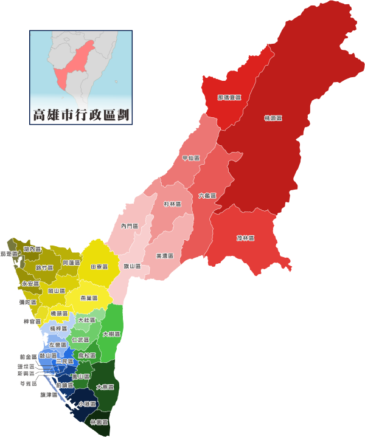

行政區劃
鄭氏時期於1664年高雄被劃入鄭氏王朝下2個州之一的萬年州。清領時期於1684年被劃入鳳山縣，並曾將縣治設於興隆里（今左營區）。原高雄市方面，日治時期於1920年劃為「高雄郡高雄街」，隸屬於高雄州；4年後廢除高雄郡，直接將高雄街改設為「高雄市」，仍隸屬於高雄州，自此高雄正式取代鳳山成為此區域之名。1940年高雄市併入原隸屬岡山郡的左營庄、原隸屬鳳山郡鳳山街的籬仔內、崗山仔，以及原隸屬鳳山郡小港庄的草衙、佛公。1943年再度併入原隸屬岡山郡楠梓庄的楠梓、土庫、後勁等地區。
民國時期於1945年原高雄市成為省轄市，隸屬臺灣省。1946年轄鹽埕、鼓山、左營、楠梓、三民、新興、前金、連雅（苓雅）、前鎮與旗津10區。1979年高雄市升格為直轄市，高雄縣的小港鄉劃歸本市管轄，成為小港區。1983年原劃歸海南特別行政區管轄的南海東沙群島以及南沙群島中的太平島、2005年南沙群島中的中洲島，行政管理上開始由本市旗津區中興里管轄。
2010年高雄市縣合併改制後，原高雄市11個區與原高雄縣27個鄉鎮市，合共成38個區，651個里，1萬7333個鄰。大高雄傳統上分為4個地區，即舊高雄市區、鳳山、岡山、旗山，相當於原日本統治時期高雄州所轄之高雄州轄市、鳳山郡、岡山郡、旗山郡。
總人口30萬以上: 鳳山、三民。
總人口15至20萬: 左營、前鎮、楠梓、苓雅、小港。
總人口10至15萬: 鼓山、大寮。
總人口5至10萬: 岡山、仁武、林園、路竹、新興。
總人口1至5萬: 鳥松、大樹、美濃、橋頭、旗山、梓官、大社、茄萣、燕巢、湖內、阿蓮、旗津、前金、鹽埕、彌陀、內門、永安、六龜、杉林。
總人口5000至1萬: 田寮、甲仙。
總人口5000以下: 桃源、茂林、那瑪夏。
資料時間：2019年5月；來源：內政部戶政司人口資料庫。
人口消長計算方式為本月人口減去上月人口，負值以紅字表示，正值以藍字表示，沒有增長以綠字表示。
各區人口密度以4捨5入至小數點前1位計之。
高度成長: 楠梓、鼓山、鳳山、仁武、新興。
穩定成長: 左營、小港、岡山、大寮、鳥松、大社、大樹、橋頭(最有潛力區)、茄萣、湖內、梓官、路竹、永安、茂林、桃源。
人口流失: 鹽埕、前金、苓雅、前鎮、三民、旗津、林園、旗山、美濃、彌陀、燕巢、田寮、阿蓮、甲仙、內門、杉林、六龜、那瑪夏。
連到第1頁
連到第2頁
連到第4頁
連到第5頁